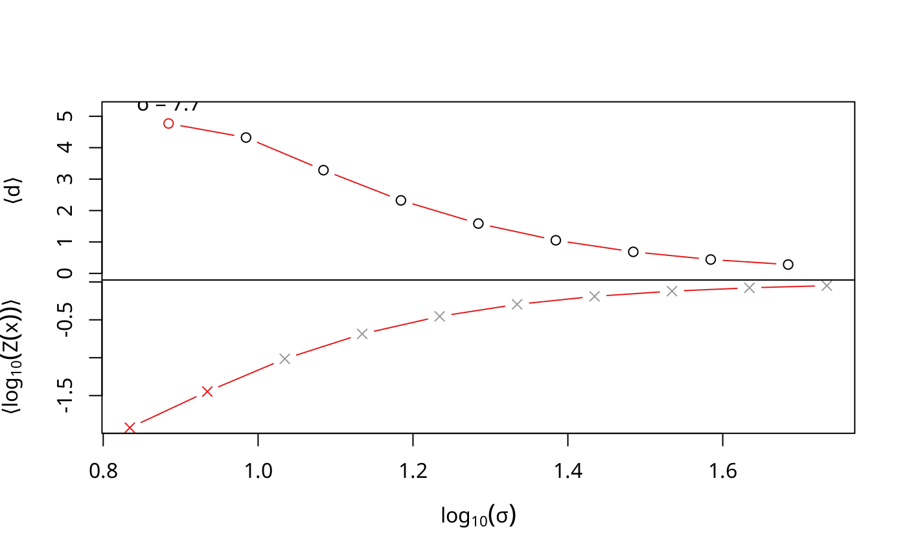

R/sigmas.r
find_sigmas.RdThe sigma with the maximum value in average dimensionality is close to the ideal one. Increasing step number gets this nearer to the ideal one.
find_sigmas(data, step_size = 0.1, steps = 10L, start = NULL, sample_rows = 500L, early_exit = FALSE, ..., censor_val = NULL, censor_range = NULL, missing_range = NULL, vars = NULL, verbose = TRUE)
| data | Data set with \(n\) observations. Can be a data.frame, matrix, ExpressionSet or SingleCellExperiment. |
|---|---|
| step_size | Size of log-sigma steps |
| steps | Number of steps/calculations |
| start | Initial value to search from. (Optional. default: \(\log_{10}(min(dist(data)))\)) |
| sample_rows | Number of random rows to use for sigma estimation or vector of row indices/names to use. In the first case, only used if actually smaller than the number of available rows (Optional. default: 500) |
| early_exit | logical. If TRUE, return if the first local maximum is found, else keep running |
| ... | Unused. All parameters to the right of the |
| censor_val | Value regarded as uncertain. Either a single value or one for every dimension |
| censor_range | Uncertainity range for censoring. A length-2-vector of certainty range start and end. TODO: also allow \(2\times G\) matrix |
| missing_range | Whole data range for missing value model. Has to be specified if NAs are in the data |
| vars | Variables (columns) of the data to use. Specifying TRUE will select all columns (default: All floating point value columns) |
| verbose | logical. If TRUE, show a progress bar and plot the output |
Object of class Sigmas
Sigmas, the class returned by this; DiffusionMap, the class this is used for
#> min_dist start step_size #> 6.8302965 0.8344396 0.1000000 #> | | | 0% | |========= | 12% | |================== | 25% | |========================== | 38% | |=================================== | 50% | |============================================ | 62% | |==================================================== | 75% | |============================================================= | 88% | |======================================================================| 100%#> Warning: Fontmetrik ist für das Unicode-Zeichen U+27e8 unbekannt#> Warning: Fontmetrik ist für das Unicode-Zeichen U+27e9 unbekannt#> Warning: Fontmetrik ist für das Unicode-Zeichen U+27e8 unbekannt#> Warning: Konvertierungsfehler für '⟨' in 'mbcsToSbcs': Punkt ersetzt <e2>#> Warning: Konvertierungsfehler für '⟨' in 'mbcsToSbcs': Punkt ersetzt <9f>#> Warning: Konvertierungsfehler für '⟨' in 'mbcsToSbcs': Punkt ersetzt <a8>#> Warning: Fontmetrik ist für das Unicode-Zeichen U+27e9 unbekannt#> Warning: Konvertierungsfehler für '⟩' in 'mbcsToSbcs': Punkt ersetzt <e2>#> Warning: Konvertierungsfehler für '⟩' in 'mbcsToSbcs': Punkt ersetzt <9f>#> Warning: Konvertierungsfehler für '⟩' in 'mbcsToSbcs': Punkt ersetzt <a9>#> Warning: Fontmetrik ist für das Unicode-Zeichen U+27e8 unbekannt#> Warning: Fontmetrik ist für das Unicode-Zeichen U+27e9 unbekannt#> Warning: Fontmetrik ist für das Unicode-Zeichen U+27e8 unbekannt#> Warning: Konvertierungsfehler für '⟨' in 'mbcsToSbcs': Punkt ersetzt <e2>#> Warning: Konvertierungsfehler für '⟨' in 'mbcsToSbcs': Punkt ersetzt <9f>#> Warning: Konvertierungsfehler für '⟨' in 'mbcsToSbcs': Punkt ersetzt <a8>#> Warning: Fontmetrik ist für das Unicode-Zeichen U+27e9 unbekannt#> Warning: Konvertierungsfehler für '⟩' in 'mbcsToSbcs': Punkt ersetzt <e2>#> Warning: Konvertierungsfehler für '⟩' in 'mbcsToSbcs': Punkt ersetzt <9f>#> Warning: Konvertierungsfehler für '⟩' in 'mbcsToSbcs': Punkt ersetzt <a9>#> DiffusionMap (20 Diffusion components and 428 observations) #> eigenvalues: num [1:20] 0.91 0.785 0.695 0.657 0.588 ... #> eigenvectors: num [1:428, 1:20] 0.0628 0.0608 0.0481 0.0445 0.0469 ... #> ..colnames: chr [1:20] "DC1" "DC2" "DC3" "DC4" ... #> optimal_sigma: num 7.66 #> distance: chr "euclidean"